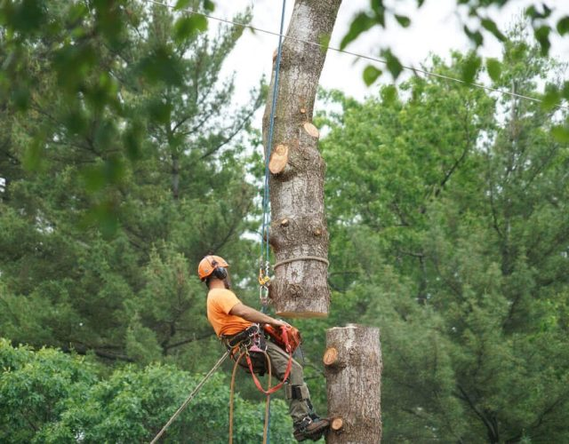

Tree Service Blackfoot Idaho
Tree Removal, Tree Trimming & Much More - That's What We Do 24/7.
Call For A Free Estimate !
Call Now : 208-417-7993Get A Free Quote Here !
Please enable JavaScript in your browser to complete this form. Name * First Last Phone Number * Email * Service Required? * Submit
Tree Service in Blackfoot, Idaho
If you’re looking for professional tree service in Blackfoot, Idaho then you’ve come to the right place. Our team is well-versed in all facets of tree-related care, serving both residential and commercial needs. Whether it is meticulous tree trimming or efficient tree removal, our seasoned veterans possess the knowledge and expertise to accomplish the task at hand flawlessly. We also extend our offerings to include tree stump grinding and removal, tree cabling, bracing, and even emergency tree services. Recognizing the paramount importance of executing these endeavors with utmost care, we never take any aspect for granted. Employing cutting-edge techniques tailored to each unique situation, we utilize solely the most appropriate tools and materials available, ensuring the highest level of precision and efficiency. Our proficiency extends beyond mere tree trimming or removal, as we boast a profound understanding of tree biology, prioritizing responsibility towards our valued clients, the trees themselves, and the environment. With professional experience, refined technique, advanced technology, and an unwavering passion for our craft, we stand apart in our field.
Our company is located in Pocatello, Idaho, provides tree service in Pocatello , tree service in Blackfoot, Idaho, tree service in Chubbuck, Idaho , tree service in Twin Falls , Idaho, tree service in Caldwell, Idaho , tree service in Idaho Falls, and tree service in American Falls, as well as the surrounding areas.
Call us now : 208-417-7993Why choose our company for your tree service needs?
- Professional Experienced Staff:
In Blackfoot, Idaho, numerous tree service companies operate, yet only a select few, such as our esteemed organization, boast a professional and skilled workforce capable of offering a wide array of tree-related services. When we emphasize experience, we are referring to the expertise of our crew in employing cutting-edge techniques for both residential and commercial tree services. We are committed to utilizing advanced, secure, and efficient tools and equipment, further enhancing our capabilities. In essence, our crews collectively possess decades of invaluable experience, a characteristic that exemplifies our responsible and diligent approach to every task. While some may regard tree removal as mundane, for us, it is an undertaking executed with utmost pride and passion. Our services impeccably mirror the essence of our organization, exemplifying our unwavering commitment to excellence.
- Affordable Price:
Carrying out our duties with utmost professionalism naturally yields unparalleled efficiency. Our operations are characterized by meticulous precision, assiduously avoiding the squandering of time, resources, and energy, thereby ensuring the successful completion of each task. This exceptional efficiency empowers us to offer cost-effective tree services throughout the region of Blackfoot, Idaho. Our distinctive ability to discern the precise requirements, locations, and timing enables us to execute every action with unwavering confidence, harmonizing each move with our overarching objectives. All our comprehensive tree-related services are conveniently accessible at a reasonable rate, conducted exclusively by our team of seasoned experts.
- Residential & Commercial Tree Service:
Immerse yourself in a world where we understand the unique needs of every environment when it comes to tree removal and trimming. But we don’t stop there – we go above and beyond by offering additional services like tree stump removal and grinding. Whether you’re a homeowner or a business owner, we’ll be by your side throughout the entire process, providing expert guidance and support. Safety is our top priority, and we’ll never compromise on it. We believe that only trained professionals with the right tools should handle tree removal. Trying to tackle this task on your own can be risky and challenging.
So why not let us take the reins? Contact us today and experience the prompt and efficient service you deserve.
Call Us Now : 208-417-7993How do you choose a quality tree service company?
The principle of seeking the most qualified professional applies universally, whether it be selecting a top-tier physician in times of illness or engaging an exceptional contractor for repairs. In a similar vein, when confronted with tree-related concerns, it is imperative to opt for the finest tree service available in Blackfoot, Idaho. While tree removal may appear commonplace, it presents formidable challenges, particularly for those lacking experience. A seasoned arboreal expert possesses the proficiency to adeptly navigate a myriad of tree removal scenarios, deftly executing the necessary steps. By opting for a reputable tree service company, one not only secures financial savings but also preserves invaluable time and resources.
Call Us : 208-417-7993Our Best Tree Services :

Tree Removal in Blackfoot, Idaho
Tree removal is a standout service in our extensive range of offerings. We take great pride in our exceptional ability to expertly handle tree removal tasks with utmost efficiency. Our dedicated team of experienced professionals has successfully navigated numerous tree removal scenarios, making it a second nature for us. With precision and promptness, we execute the process swiftly, ensuring the safety of the surrounding area. Whether it involves a few trees or intricate situations, we have conquered them all.
Moreover, we offer the flexibility to either leave the stump behind or remove it, according to your preference. Feel free to contact us now, and we will conduct a comprehensive analysis of the necessary actions to be taken.
Read More
Tree Trimming in Blackfoot, Idaho
Tree removal requires a specific and efficient approach to ensure success. However, tree trimming is a vastly different task that demands delicacy, meticulous attention, and expertise. When undertaking tree trimming, utmost care must be taken to avoid inadvertently damaging healthy buds, as this could adversely impact their future growth. Our skilled crew possesses the necessary knowledge and proficiency to expertly trim trees of any variety, whenever required. Each tree is unique and necessitates proper care to thrive.
Therefore, we must be cognizant of the species and distinct characteristics of the tree in question, to ensure its optimal development. Our esteemed tree trimmers in Pocatello, Idaho are committed to delivering unparalleled services of the highest caliber.
Read More
Tree Stump Grinding and Removal in Blackfoot, Idaho
Following the removal of a tree, the presence of an unsightly stump can pose both an aesthetic dilemma and a latent danger. To safeguard the safety and visual allure of your surroundings, we proudly extend our expert services in stump grinding and removal.
Read More
Tree Cabling and Bracing in Blackfoot, Idaho
Our tree cabling and bracing services serve to fortify trees with structural vulnerabilities or prone to damage caused by strong winds. By providing supplementary support, we guarantee enhanced stability and a prolonged lifespan.
Read More
Shrub Removal in Blackfoot, Idaho
Aside from providing tree services, our company also specializes in shrub removal to assist you in upholding a meticulously manicured landscape.
Read More
24/7 Emergency Tree Services in Blackfoot, Idaho
We acknowledge that unforeseen tree-related emergencies may arise at any given moment. Hence, we are proud to extend our round-the-clock emergency tree services, ensuring swift resolution of unexpected concerns.
Read MoreResidential And Commercial Tree Service:
Whether it’s the majestic oak in your backyard or the towering maple on the corner of Main Street, we are here to protect and enhance the beauty of your surroundings. Our team understands the importance of maintaining a safe and secure environment for your home or business. We are equipped with the knowledge and expertise to handle any tree-related challenge, from removing hazardous branches to trimming unruly limbs. With our unwavering commitment to excellence, we ensure that your property maintains its pristine appearance while adhering to the highest safety standards. Trust us to provide the necessary support and assistance, so you can enjoy the peace of mind that comes with a well-maintained and visually stunning landscape.
About Blackfoot, Idaho :
The city of Blackfoot is a small, suburban city in Idaho. Its population, according to the US Census Bureau, is about 13,332 people. For more information about Chubbuck, Idaho, visit Wikipedia .
Call Now : 208-417-7993Questions & Answers
Tree service clients’ most frequently asked questions :
On average tree removal and other related services could cost around $500. Don’t worry, we provide one of the most reasonably priced tree services in Blackfoot, so call us now for your free estimate!
Certain factors make tree removal a bit expensive. One is that when a tree is very large so it would be cheaper to trim it. The second reason factor is when a tree is near any property because we need to safeguard the said property in the process of removing a tree.
No matter your decision, we can work around it and find the best solutions. A tree should be removed for so many reasons. When it’s hollow when it shows signs of infections, or if there are any visible defects on its roots. Don’t worry, we can analyze it and tell you the best course of action for your problem.
 In our yard, we have a huge elm tree, and in our backyard, we have a giant cottonwood that is trimmed by this company.
I found them to be extremely knowledgeable and friendly.
It was wonderful to watch the clean-up!
I think it looked better than when the first group arrived!
This tree service is certainly one we would recommend.
Clara
In our yard, we have a huge elm tree, and in our backyard, we have a giant cottonwood that is trimmed by this company.
I found them to be extremely knowledgeable and friendly.
It was wonderful to watch the clean-up!
I think it looked better than when the first group arrived!
This tree service is certainly one we would recommend.
Clara
 This Tree Service company has awesome service. I was devastated by the removal of a very large tree, which was located right next to my house. It was an extremely competitive and fair bid. Their arrival was on time and as planned (even early!). I was impressed by the whole crew. Very hard workers and very safe as well.
Amelia
This Tree Service company has awesome service. I was devastated by the removal of a very large tree, which was located right next to my house. It was an extremely competitive and fair bid. Their arrival was on time and as planned (even early!). I was impressed by the whole crew. Very hard workers and very safe as well.
Amelia
 My business will always be with this tree service company. It was hired to trim a number of large trees in my backyard. The extremely large trees on my property needed a lot of attention. To make my trees healthy and safe, I asked them to do whatever was needed. It was discovered there were several dead limbs that had a lot of potential for damage come winter. Just as I wanted, I received perfectly trimmed trees that were safe and healthy.
Ryan
My business will always be with this tree service company. It was hired to trim a number of large trees in my backyard. The extremely large trees on my property needed a lot of attention. To make my trees healthy and safe, I asked them to do whatever was needed. It was discovered there were several dead limbs that had a lot of potential for damage come winter. Just as I wanted, I received perfectly trimmed trees that were safe and healthy.
Ryan